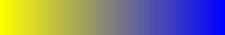
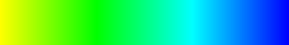
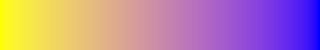
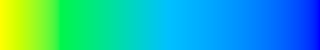

| Safe Haskell | None |
|---|---|
| Language | Haskell2010 |
Reanimate.ColorComponents
Description
Colors are three dimensional and can be projected into many color spaces with different properties.
Interpolating directly in the RGB color space is unintuitive and rarely useful. If you want to transition through color, you most likely want either the XYZ space (for physically accurate color transitions) or the LAB space (for esthetically pleasing colors).
Synopsis
- data ColorComponents = ColorComponents {}
- rgbComponents :: ColorComponents
- hsvComponents :: ColorComponents
- labComponents :: ColorComponents
- xyzComponents :: ColorComponents
- lchComponents :: ColorComponents
- interpolate :: ColorComponents -> Colour Double -> Colour Double -> Double -> Colour Double
- interpolateRGB8 :: ColorComponents -> PixelRGB8 -> PixelRGB8 -> Double -> PixelRGB8
- interpolateRGBA8 :: ColorComponents -> PixelRGBA8 -> PixelRGBA8 -> Double -> PixelRGBA8
- toRGB8 :: Colour Double -> PixelRGB8
- fromRGB8 :: PixelRGB8 -> Colour Double
Documentation
data ColorComponents Source #
Constructor and destructor for color's three components.
rgbComponents :: ColorComponents Source #
interpolate rgbComponents yellow blue

hsvComponents :: ColorComponents Source #
interpolate hsvComponents yellow blue

labComponents :: ColorComponents Source #
interpolate labComponents yellow blue

xyzComponents :: ColorComponents Source #
interpolate xyzComponents yellow blue
lchComponents :: ColorComponents Source #
interpolate lchComponents yellow blue

interpolate :: ColorComponents -> Colour Double -> Colour Double -> Double -> Colour Double Source #
Smoothly interpolate between two colors using the given color components.
interpolateRGB8 :: ColorComponents -> PixelRGB8 -> PixelRGB8 -> Double -> PixelRGB8 Source #
Convenience interpolation function for RGB8 values.
interpolateRGBA8 :: ColorComponents -> PixelRGBA8 -> PixelRGBA8 -> Double -> PixelRGBA8 Source #
Convenience interpolation function for RGBA8 values.